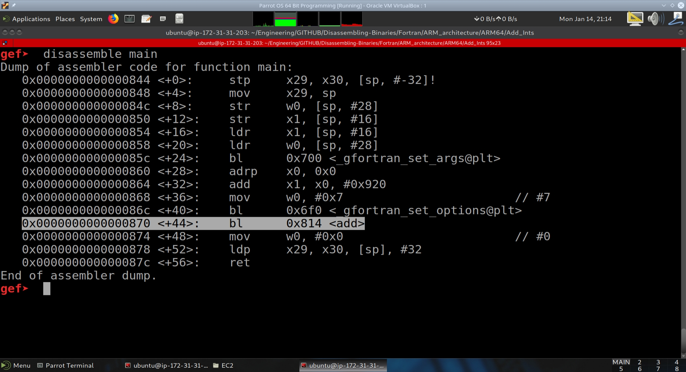
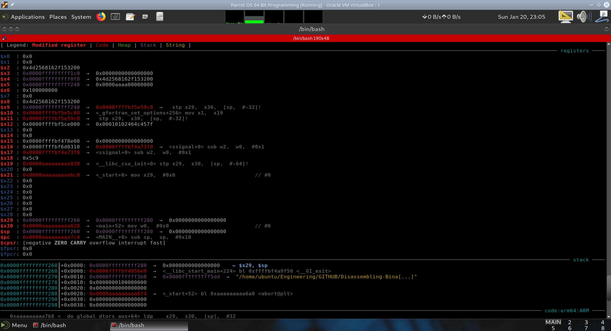
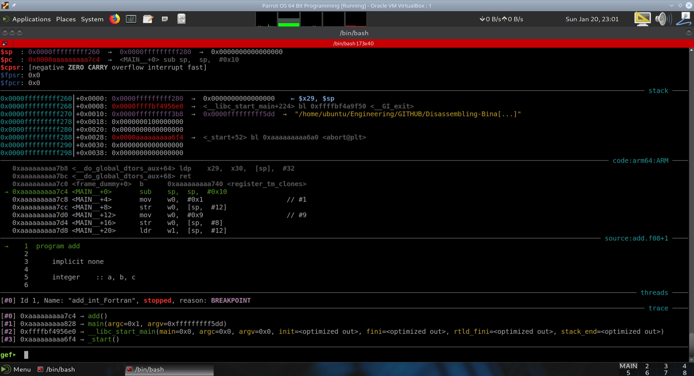

Fortran - ARM 64-Bit Platform#
Introduction#
In this section we will be disassembling simple binaries generated by the Fortran high-level language compiled for the 64-bit ARM platform. We will disassemble the binaries using GDB+GEF as well Radare2.
Project code for this section is contained in my markkhusid/Disassembling-Binaries.
The program add.f08#
program add_int
implicit none
integer :: a, b, c
a = 1
b = 9
c = a + b
end program add_int
The program displays the contents of the program add_int.f08. The program creates three integers: a, b, and c. a is assigned the value of 1, b is assigned the value of 9, and c is assigned the result of the operation a + b.
The program is obviously very simple, with no inputs and outputs. The idea is to generate the binary and look at the disassembly to learn about the workings of the 64-bit ARM processor platform.
The chosen test system is an instance on Amazon Web Services. This is a new service that is powered by a 64-bit ARMv8 processor. It fits very well for this application due to its availability and ease of access from multiple remote systems via SSH.
The program is compiled with:
$ gfortran -ggdb3 add.f08 -o add_int_Fortran_aarch64_ggdb3
For general edification, we also have gfortran produce generic assembly with the -S option, an object file with the -o option, and object dumps of the object and executable files.
The generic assembly is generated by using the -S (assembly) option:
$ gfortran -S -ggdb3 add.f08 -o add.s
The object file is generated by using the -c (compile) option:
$ gfortran -c -ggdb3 add.s -o add.o
The objdump files are generated by using the following command and options:
$ objdump -x -D -S -s -g -t add.o > objdump_of_dot_o.txt
$ objdump -x -D -S -s -g -t add_int_Fortran_aarch64_ggdb3 > objdump_of_dot_exe.txt
A rundown of the objdump options is shown here:
$objdump
Usage: objdump <option(s)> <file(s)>
Display information from object <file(s)>.
At least one of the following switches must be given:
-a, --archive-headers Display archive header information
-f, --file-headers Display the contents of the overall file header
-p, --private-headers Display object format specific file header contents
-P, --private=OPT,OPT... Display object format specific contents
-h, --[section-]headers Display the contents of the section headers
-x, --all-headers Display the contents of all headers
-d, --disassemble Display assembler contents of executable sections
-D, --disassemble-all Display assembler contents of all sections
--disassemble=<sym> Display assembler contents from <sym>
-S, --source Intermix source code with disassembly
--source-comment[=<txt>] Prefix lines of source code with <txt>
-s, --full-contents Display the full contents of all sections requested
-g, --debugging Display debug information in object file
-e, --debugging-tags Display debug information using ctags style
-G, --stabs Display (in raw form) any STABS info in the file
-W, --dwarf[a/=abbrev, A/=addr, r/=aranges, c/=cu_index, L/=decodedline,
f/=frames, F/=frames-interp, g/=gdb_index, i/=info, o/=loc,
m/=macro, p/=pubnames, t/=pubtypes, R/=Ranges, l/=rawline,
s/=str, O/=str-offsets, u/=trace_abbrev, T/=trace_aranges,
U/=trace_info]
Display the contents of DWARF debug sections
-Wk,--dwarf=links Display the contents of sections that link to
separate debuginfo files
-WK,--dwarf=follow-links
Follow links to separate debug info files (default)
-WN,--dwarf=no-follow-links
Do not follow links to separate debug info files
-L, --process-links Display the contents of non-debug sections in
separate debuginfo files. (Implies -WK)
--ctf[=SECTION] Display CTF info from SECTION, (default `.ctf')
--sframe[=SECTION] Display SFrame info from SECTION, (default '.sframe')
-t, --syms Display the contents of the symbol table(s)
-T, --dynamic-syms Display the contents of the dynamic symbol table
-r, --reloc Display the relocation entries in the file
-R, --dynamic-reloc Display the dynamic relocation entries in the file
@<file> Read options from <file>
-v, --version Display this program's version number
-i, --info List object formats and architectures supported
-H, --help Display this information
In our case, we want -x (all headers), -D (disassemble all), -S (display source code with assembly), -s (full contents of all sections), -g (debug info), and finally, -t (display contents of the symbol tables).
We will now disassemble this program on the 64-bit ARM platform and step through the assembly instructions.
Disassembling add_int_Fortran_aarch64_ggdb3 in GDB + GEF#
The debug process is started by entering:
$ gdb add_int_Fortran_aarch64_ggdb3
We then want to disassemble main. Looking at main’s disassembly, we notice a call at main+44 to a function at address 0x870 called add. We then do a disassembly on this function as well.

Running add_int_Fortran_aarch64_ggdb3 in GDB + GEF#
When we look at the executable’s objdump, we notice that there are two functions of interest, one is main, and the other is MAIN__. The Fortran compiler sets up the program arguments and options in main, while the actual program is contained within MAIN__ (that is capital MAIN followed by two underscores).
The following text from the executable’s objdump illustrates this:
00000000000007c4 (MAIN__):
program add
7c4: d10043ff sub sp, sp, #0x10
implicit none
integer :: a, b, c
a = 1
7c8: 52800020 mov w0, #0x1 // #1
7cc: b9000fe0 str w0, [sp, #12]
b = 9
7d0: 52800120 mov w0, #0x9 // #9
7d4: b9000be0 str w0, [sp, #8]
c = a + b
7d8: b9400fe1 ldr w1, [sp, #12]
7dc: b9400be0 ldr w0, [sp, #8]
7e0: 0b000020 add w0, w1, w0
7e4: b90007e0 str w0, [sp, #4]
end program add
7e8: d503201f nop
7ec: 910043ff add sp, sp, #0x10
7f0: d65f03c0 ret
00000000000007f4 (main):
7f4: a9be7bfd stp x29, x30, [sp, #-32]!
7f8: 910003fd mov x29, sp
7fc: b9001fa0 str w0, [x29, #28]
800: f9000ba1 str x1, [x29, #16]
804: f9400ba1 ldr x1, [x29, #16]
808: b9401fa0 ldr w0, [x29, #28]
80c: 97ffff95 bl 660 <_gfortran_set_args@plt>
810: 90000000 adrp x0, 0 <_init-0x628>
814: 91236000 add x0, x0, #0x8d8
818: aa0003e1 mov x1, x0
81c: 528000e0 mov w0, #0x7
820: 97ffffa4 bl 6b0 <_gfortran_set_options@plt>
824: 97ffffe8 bl 7c4 <MAIN__>
828: 52800000 mov w0, #0x0
82c: a8c27bfd ldp x29, x30, [sp], #32
830: d65f03c0 ret
834: 00000000 .inst 0x00000000 ; undefined
We therefore want to set a breakpoint at *MAIN__. We use the * to get at MAIN__ + 0.
gef➤ break *MAIN__
Breakpoint 3 at 0xaaaaaaaaa7c4: file add.f08, line 1.
The AArch64 has a lot of registers (36 registers visible in GEF), and it becomes necessary to zoom out the screen to see the entire output of GEF. For easier viewing on this website, we will display the output of GEF using two screenshots.
 Rather than taking screenshots of the state of GEF after executing every instruction, we will place comments on the assembly instructions in MAIN__ from the executable’s objdump output.
00000000000007c4 (MAIN__):
program add
7c4: d10043ff sub sp, sp, #0x10
implicit none
integer :: a, b, c
a = 1
7c8: 52800020 mov w0, #0x1 // #1 - Moves a 1 into register w0
7cc: b9000fe0 str w0, [sp, #12] // - Stores the contents of register w0 into the stack pointer + 12.
// Recall that even though the machine is 64 bit, when defining a
// variable as an integer, it is 32 bits in size. In Fortran there are
// ways of changing the size of the integer as stored in memory.
// The compiler set aside 4x3 = 12 bytes to store these integers.
// The integer variable a is at sp + 12.
b = 9
7d0: 52800120 mov w0, #0x9 // #9 - Moves a 1 into register w0
7d4: b9000be0 str w0, [sp, #8] // - Stores the contents of register w0 into stack pointer + 8.
c = a + b // Now that the stack contains the addends, the machine can perform the operation.
7d8: b9400fe1 ldr w1, [sp, #12] // The variable a is loaded into register w1.
7dc: b9400be0 ldr w0, [sp, #8] // The variable b is loaded into register w0.
7e0: 0b000020 add w0, w1, w0 // w0 + w1 and store result into w0
7e4: b90007e0 str w0, [sp, #4] // Store the value in w0 into stack pointer + 4.
// Stack pointer + 4 is reserved for the integer variable c.
end program add
7e8: d503201f nop // No Operation. Used for 64-bit boundary alignment.
7ec: 910043ff add sp, sp, #0x10 // Clean up the stack. Subtract 16 from the stack pointer.
7f0: d65f03c0 ret // Return to main by popping the return address off of